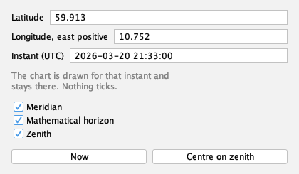

Place and Time · Application UI
Three fields, three switches, two actions

- Ink
- Application UI, not chart output.
- Source
- docs/studies/place-and-time/dialog-real.png
- Produced
- Session photograph of the real dialog on a display; held unchanged by make evidence-contracts. v1.7.0 tree (8820a6d).